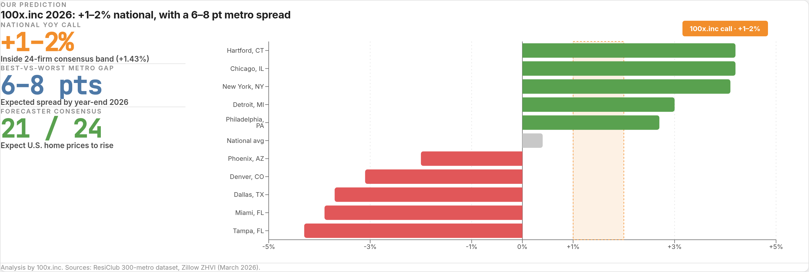
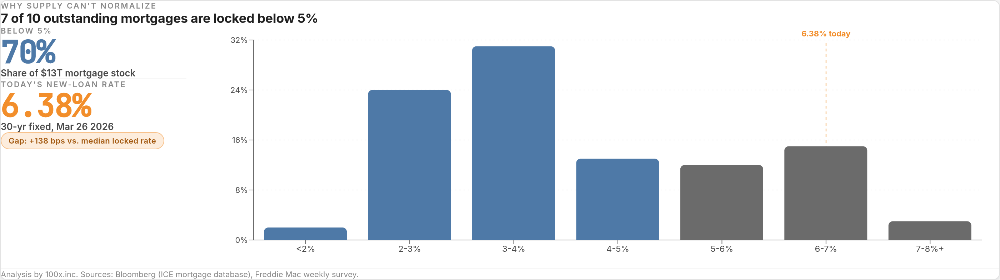
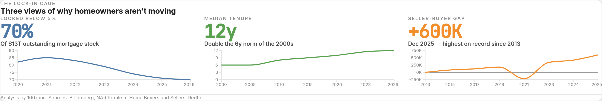
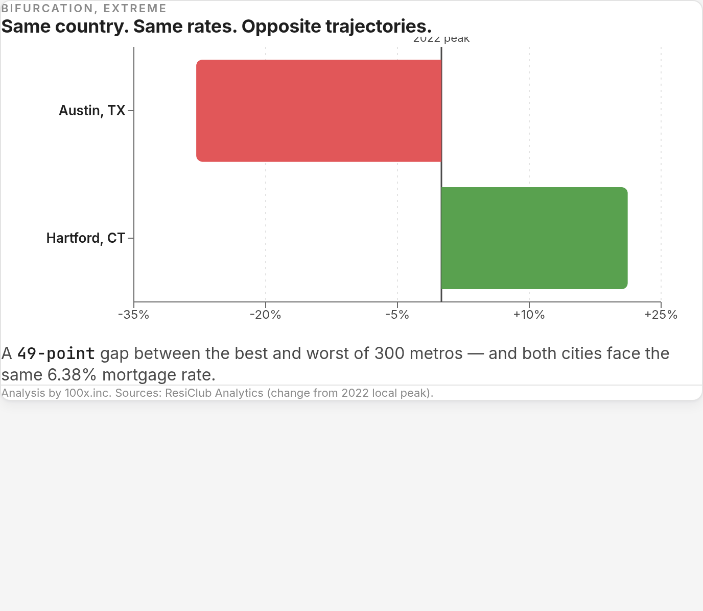
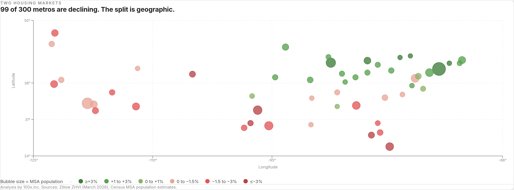
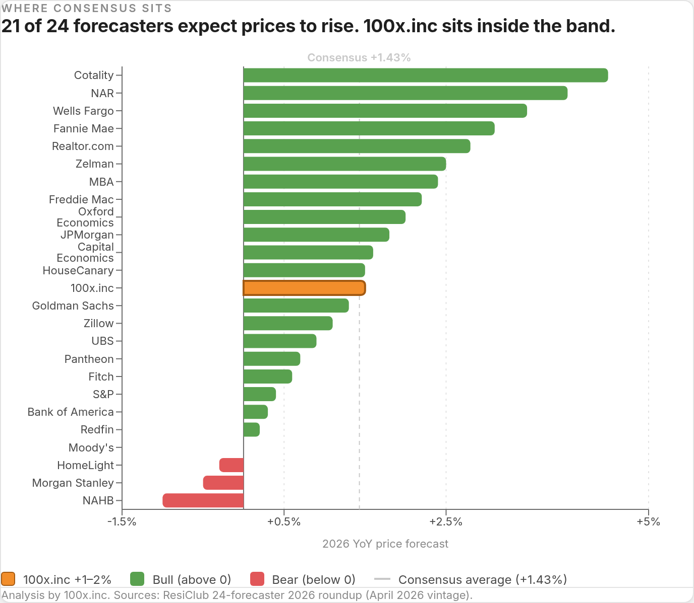
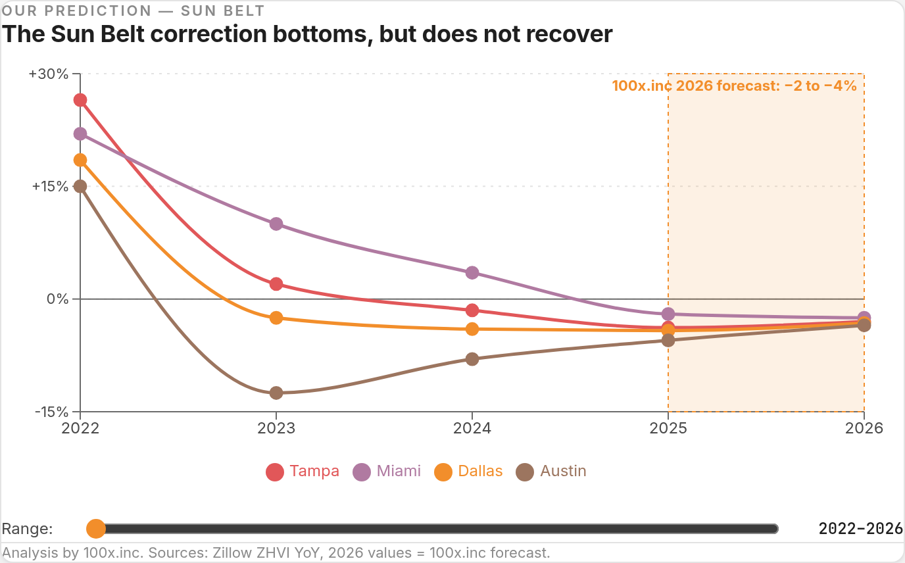
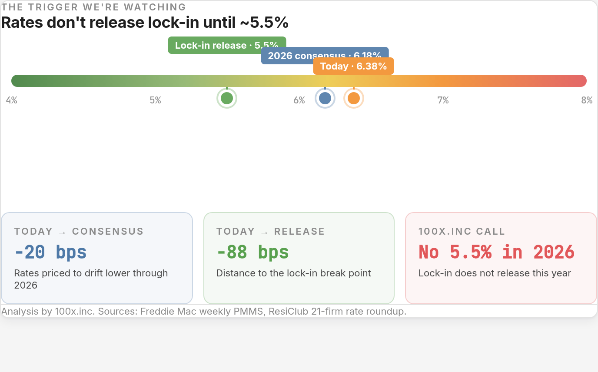
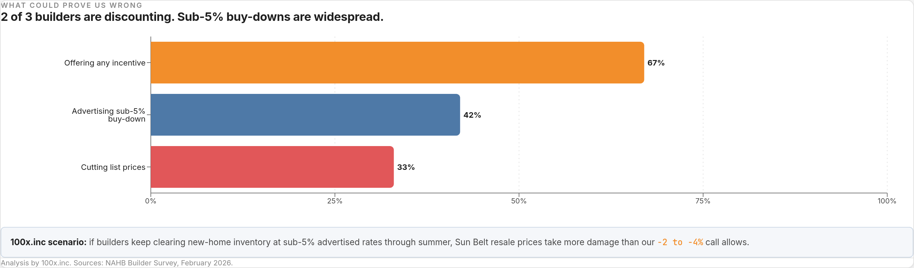

National home prices will rise 1–2% in 2026 — and by year-end that average will hide a six-to-eight-point gap between the best and worst major metros.

Chart 1 · Our prediction
The 100x.inc call: +1–2% national centerline with a metro-spread bar showing the six-to-eight-point gap between top and bottom major markets. Analysis by 100x.inc. Sources: ResiClub 300-metro dataset, Zillow ZHVI (March 2026).
We predicted home prices would rise 4% in 2023 while everyone else was calling a crash. We were right.
Why: the lock-in cage
Supply cannot normalize
7 out of 10 mortgages are locked below 5%. Typical homeowner tenure is 12 years — double 20 years ago.
At 6.38% rates, homeowners don't sell. Supply cannot normalize. Prices grind higher even with 600,000 more sellers than buyers in December — the highest on record.

Chart 2 · Rate distribution
Distribution of outstanding mortgage rates. 70% of the stock sits below 5%. Today's new-loan rate of 6.38% marked. Analysis by 100x.inc. Sources: Bloomberg, Freddie Mac.

Chart 3 · The lock-in cage
Three views of the lock-in: share of mortgages below 5%, median homeowner tenure, and the December seller-buyer gap. Analysis by 100x.inc. Sources: Bloomberg, NAR.
The catch
There is no national market
99 of the 300 largest U.S. metros posted year-over-year price declines in February 2026. One in three.
Hartford sits 21.2% above its 2022 peak. Austin sits 27.9% below. Same country. Same rates. Opposite trajectories.

Chart 4 · Bifurcation, extreme
Change from 2022 peak. Hartford +21.2%, Austin −27.9% — a 49-point spread between two cities on the same 6.38% mortgage. Analysis by 100x.inc. Sources: ResiClub.

Chart 5 · Two housing markets
Top 50 U.S. metros — bubble size by MSA population, color by 2026 YoY price change. The Sun Belt and West Coast are correcting; the Northeast and Midwest are rising. Analysis by 100x.inc. Sources: Zillow ZHVI (March 2026), Census.
Where consensus sits
Inside the band, not at the top
21 of 24 major forecasters expect U.S. home prices to rise in 2026. Average: +1.43%. Range: −1% to +4.5%.
We sit inside that range. But the average hides the real story — which metro you own matters more than the national average.

Chart 6 · Forecaster spread
2026 U.S. home price forecasts, 24 firms plus 100x.inc. Consensus average +1.43%. 100x.inc's +1–2% call highlighted in orange. Analysis by 100x.inc. Sources: ResiClub 24-forecaster roundup.
Our prediction
Midwest and Northeast lead; Sun Belt correction bottoms
Midwest and Northeast up 3–5%. Chicago, New York, Philadelphia, Detroit, and Boston lead.
Sun Belt down 2–4%. Tampa, Miami, Dallas, Denver, and Austin print another negative year — but the declines shrink. The correction is closer to the end than the beginning.

Chart 7 · Sun Belt trajectory
Tampa, Miami, Dallas, Austin YoY price change 2022 through 2026. The 100x.inc 2026 forecast band (−2 to −4%) is shaded. Declines are shrinking but still negative. Analysis by 100x.inc. Sources: Zillow ZHVI.
Lock-in does not release at 6.38%. It might at 5.5%. We don't see 5.5% this year.

Chart 8 · The trigger we're watching
Today's 6.38%, 2026 consensus 6.18%, lock-in release threshold ~5.5%. The distance to release is 88 bps — a gap that rarely closes in a single year. Analysis by 100x.inc. Sources: Freddie Mac, ResiClub.
What could prove us wrong
Two scenarios we're watching
Rates fall below 5.5%. Lock-in releases, inventory floods, and the Sun Belt recovers faster than we predict.
Builders flood the Sun Belt with sub-5% buy-downs. 2/3 of builders offered incentives in February. New-home supply pressures resale prices harder than we predict.

Chart 9 · Builder behavior
February 2026: 67% of builders offering incentives, 42% advertising sub-5% buy-down rates, 33% cutting list prices. Analysis by 100x.inc. Sources: NAHB Builder Survey.
Expect home prices to keep rising in 2026 — in the cities nobody is watching.
Analysis by 100x.inc · Data as of March 2026 · Not investment advice.
Sources: ResiClub Analytics, Zillow ZHVI/ZHVF, NAR, NAHB, Bloomberg, Freddie Mac, WSJ, Redfin, Census.